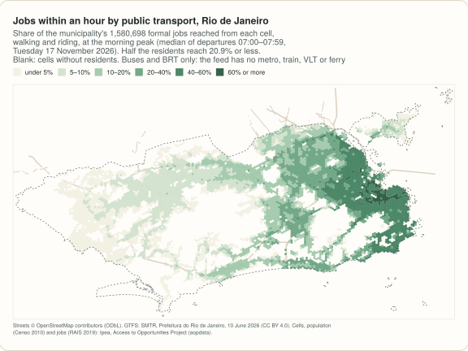
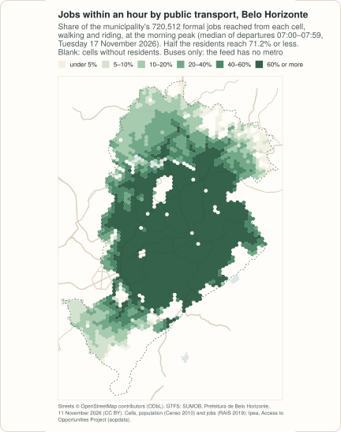
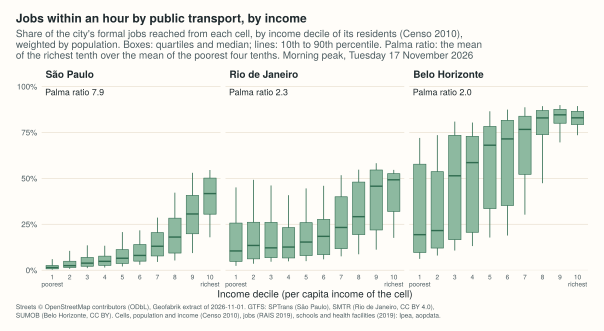
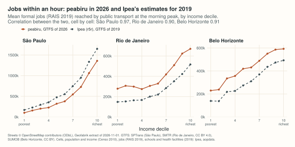
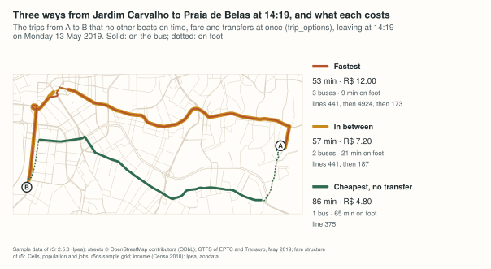

Example: who reaches the jobs in São Paulo, Rio de Janeiro and Belo Horizonte
Source:vignettes/articles/capitals.Rmd
capitals.RmdHow many jobs can a resident reach in an hour by bus and train, and does the answer depend on how much the household earns? This example measures it for three Brazilian capitals, from their official GTFS feeds as published in November 2026, and then, in a fourth, asks what is left of that access when the fare is limited.
Everything is computed by peabiru; the output shown is what the code prints, computed on 2026-11-12. The Python example repeats Belo Horizonte and the fares, and prints the same numbers.
Which cities
Five capitals were considered: São Paulo, Rio de Janeiro, Belo Horizonte, Fortaleza and Curitiba. Three are used:
| City | Feed | What it has | Version, validity | Licence |
|---|---|---|---|---|
| São Paulo | SPTrans, as the Mobility Database fetched it from SPTrans on 2026-11-12 | 1,350 bus routes, 9 of the Metrô and 7 of CPTM, all by frequency
(frequencies.txt) |
agency_url carries versao=111126; calendar
2023-10-01 to 2027-06-01 |
public data: SPTrans publishes the file for registered developers; neither its page nor the Mobility Database names a licence |
| Rio de Janeiro |
Secretaria Municipal de
Transportes (SMTR), “GTFS do Rio de Janeiro” on data.rio, file at
dados.mobilidade.rio/gtfs/schedule
|
municipal buses and BRT, nearly all by frequency (17,275 of 17,361 trips); no metro, suburban trains (SuperVia), light rail (VLT) or ferries | file of 2026-06-10; feed_info 2024-01-01 to
2026-12-31 |
CC BY 4.0 |
| Belo Horizonte | Superintendência de Mobilidade (SUMOB), “GTFS” on dados.pbh.gov.br | the conventional and the supplementary bus systems, by timetable; no metro | version 202611111921 (rewritten every day at the same address);
feed_info 2023-09-07 to 2026-12-31 |
CC BY |
Two were left out:
- Fortaleza. The city publishes Etufor’s feed on dados.fortaleza.ce.gov.br (licence “Other (Open)”), but the file there on 2026-11-12 was of 2026-04-01 and its calendar runs from 2026-04-03 to 2026-07-03: it describes no day after that, and the analysis here is of November 2026.
- Curitiba. No download published by URBS was found: the only feed in the Mobility Database’s catalogue is kept by a third party on GitHub, and the city’s open-data portal refused our requests (HTTP 403) on 2026-11-12, so this was not taken further.
São Paulo’s feed is the official one and is public data: SPTrans publishes it for registered developers, without naming a licence. It is used here as the Mobility Database redistributes it, and nothing of it is copied into this repository.
The data
| Data | Source | Licence |
|---|---|---|
| Streets |
OpenStreetMap,
extract of the Sudeste region by Geofabrik,
dated 2026-11-01 (863 MB; MD5
15c2834145c0273c96b5e7dee21c1109, as Geofabrik
publishes) |
ODbL 1.0 |
| GTFS | the three feeds above (14, 25 and 52 MB) | above |
| Municipal boundaries | IBGE, malhas municipais (API, version 3) | public data, IBGE |
| Cells, population, income | Ipea, Access to Opportunities Project, data release v1.0.0 of aopdata: H3 cells of resolution 9 (about 350 m between centres) with the residents and the household income per person of the Censo 2010 | the aopdata repository is MIT; no separate licence for the data is stated. Ipea asks for the citations at the end of this page |
| Jobs, schools, health facilities | the same release, land use of 2019: formal jobs (RAIS), public schools (Censo Escolar), public health facilities (CNES), per cell | same |
Income is that of 2010 because nothing newer exists at this resolution: the Censo 2022 tables by census tract on IBGE’s server (listing of 2026-11-12) have population, households, literacy, colour or race and deaths, and none with income. The residents are those of 2010 too, and the jobs those of 2019: the public transport is of November 2026, the people and the opportunities are older.
The files are downloaded once into a directory of their own (set
PEABIRU_EXAMPLE_DATA to keep it somewhere else). Cutting
the extract needs osmium.
library(peabiru)
library(sf)
data_dir <- Sys.getenv("PEABIRU_EXAMPLE_DATA", "capitals-data")
raw <- file.path(data_dir, "raw")
dir.create(raw, recursive = TRUE, showWarnings = FALSE)
options(timeout = 3600, HTTPUserAgent = "peabiru-docs-examples")
fetch <- function(url, name = basename(url)) {
dest <- file.path(raw, name)
if (!file.exists(dest)) download.file(url, dest, mode = "wb", quiet = TRUE)
dest
}
sudeste <- fetch("https://download.geofabrik.de/south-america/brazil/sudeste-261101.osm.pbf")
aop <- function(file) {
fetch(paste0("https://github.com/ipeaGIT/aopdata/releases/download/v1.0.0/", file))
}
cities <- list(
spo = list(name = "São Paulo", code = "3550308", feed = "sptrans.zip", url = paste0(
"https://files.mobilitydatabase.org/mdb-8/mdb-8-202611120148/mdb-8-202611120148.zip")),
rio = list(name = "Rio de Janeiro", code = "3304557", feed = "smtr.zip",
url = "https://dados.mobilidade.rio/gtfs/schedule"),
bho = list(name = "Belo Horizonte", code = "3106200", feed = "bhtrans.zip",
url = "https://s3.amazonaws.com/mobilibus-uploads/gtfs/GTFSBHTRANS.zip")
)
feeds <- sapply(cities, function(city) fetch(city$url, city$feed))
data.frame(MB = round(file.size(feeds) / 1e6, 1),
sha256 = substr(tools::sha256sum(feeds), 1, 16), row.names = basename(feeds))
#> MB sha256
#> sptrans.zip 14.3 70b6a2fccc120608
#> smtr.zip 25.3 a99f925460e7628b
#> bhtrans.zip 52.2 15d3b184fe8e1e3aRio de Janeiro’s and Belo Horizonte’s addresses always serve the current file, so a later download is another version of the network and gives other numbers; the checksums above (their first 16 digits) identify the files used here. The Mobility Database keeps São Paulo’s under a dated address.
Networks
The street network of each city is cut around the municipality and
around the stops of its feed (the trains of São Paulo’s feed run to
Jundiaí and Mogi das Cruzes), with 3 km to spare.
build_network() reads the directory with the cut and the
feed.
utm <- 31983 # SIRGAS 2000 / UTM zone 23S, in metres, for the three cities
threads <- 4 # of the 10 of the laptop; the default is all of them
boundary_of <- function(code) {
url <- paste0("https://servicodados.ibge.gov.br/api/v3/malhas/municipios/", code,
"?formato=application/vnd.geo+json&qualidade=maxima")
st_transform(st_make_valid(st_read(fetch(url, paste0(code, ".geojson")), quiet = TRUE)), utm)
}
stops_of <- function(zip) {
s <- read.csv(unz(zip, "stops.txt"), colClasses = "character")
s <- s[s$stop_lat != "" & s$stop_lon != "", ]
st_transform(st_as_sf(data.frame(lon = as.numeric(s$stop_lon), lat = as.numeric(s$stop_lat)),
coords = c("lon", "lat"), crs = 4326), utm)
}
networks <- list()
for (k in names(cities)) {
dir <- file.path(data_dir, k, "network")
dir.create(dir, recursive = TRUE, showWarnings = FALSE)
file.copy(feeds[[k]], dir, overwrite = TRUE)
hull <- st_convex_hull(st_union(stops_of(feeds[[k]])))
area <- st_buffer(st_union(st_geometry(boundary_of(cities[[k]]$code)), hull), 3000)
polygon <- file.path(data_dir, k, "cut.geojson")
st_write(st_sf(geometry = st_transform(area, 4326)), polygon, delete_dsn = TRUE, quiet = TRUE)
pbf <- file.path(dir, paste0(k, ".osm.pbf"))
stopifnot(system2("osmium", c("extract", "--overwrite", "-p", polygon, sudeste, "-o", pbf)) == 0)
networks[[k]] <- build_network(dir, n_threads = threads)
cat(sprintf("%s: %.0f km2, %.1f MB\n", k, as.numeric(st_area(area)) / 1e6, file.size(pbf) / 1e6))
}
#> spo: 4726 km2, 140.5 MB
#> rio: 2097 km2, 27.6 MB
#> bho: 696 km2, 6.4 MB
networks$spo
#> <peabiru_network>
#> data path: capitals-data/spo/network
#> streets: 561,300 vertices, 1,490,420 edges
#> transit: 1 feed(s) (sptrans), 22,270 stops, 2,269 patterns, 6 services, frequency-based trips
#> elevation: NONE
networks$rio
#> <peabiru_network>
#> data path: capitals-data/rio/network
#> streets: 204,000 vertices, 523,562 edges
#> transit: 1 feed(s) (SMTR-PCRJ), 7,694 stops, 961 patterns, 3 services, frequency-based trips
#> elevation: NONE
networks$bho
#> <peabiru_network>
#> data path: capitals-data/bho/network
#> streets: 107,414 vertices, 286,400 edges
#> transit: 1 feed(s) (bhtrans), 9,924 stops, 1,118 patterns, 14 services
#> elevation: NONEBefore routing, two checks that cost nothing.
build_network() refuses a feed with errors of high
priority, and get_gtfs_errors() lists the others;
check_transit_availability() says how much of each feed
runs on the day chosen, Tuesday 17 November 2026 (the Friday of that
week is a holiday).
day <- as.Date("2026-11-17")
do.call(rbind, lapply(names(cities), function(k) {
cbind(city = k, gtfs_errors = nrow(get_gtfs_errors(networks[[k]])),
check_transit_availability(networks[[k]], dates = day))
}))
#> city gtfs_errors date total_services active_services pct_active
#> 1 spo 0 2026-11-17 6 3 0.5000000
#> 2 rio 0 2026-11-17 3 1 0.3333333
#> 3 bho 0 2026-11-17 14 2 0.1428571None of the three feeds has an error. Few of Belo Horizonte’s services run because its calendar has one service per kind of day and of system, and only the weekday ones are due on a Tuesday.
Residents, income and opportunities
Ipea’s grid has, for each cell, the residents (P001),
the average household income per person (R001), the income
decile of the cell among the residents of the city (R003, 1
the poorest tenth), and the formal jobs (T001), public
schools (E001) and public health facilities
(S001). Each cell is routed from, and to, its centre.
cells_of <- function(k) {
grid <- st_read(aop(sprintf("hex_grid_%s.gpkg", k)), quiet = TRUE)[, "id_hex"]
people <- read.csv(aop(sprintf("population_2010_%s.csv", k)))
land <- read.csv(aop(sprintf("landuse_2019_%s.csv", k)))
cells <- merge(grid, people[, c("id_hex", "P001", "R001", "R003")], by = "id_hex")
cells <- merge(cells, land[, c("id_hex", "T001", "E001", "S001")], by = "id_hex")
names(cells)[1:7] <- c("id", "population", "income", "decile", "jobs", "schools", "health")
centre <- st_coordinates(st_transform(st_centroid(st_transform(st_geometry(cells), utm)), 4326))
cells$lon <- round(centre[, 1], 6)
cells$lat <- round(centre[, 2], 6)
cells
}
grids <- lapply(setNames(names(cities), names(cities)), cells_of)
t(sapply(grids, function(g) c(cells = nrow(g), inhabited = sum(g$population > 0),
residents = sum(g$population), jobs = sum(g$jobs),
schools = sum(g$schools), health = sum(g$health))))
#> cells inhabited residents jobs schools health
#> spo 15059 9704 11163678 3461972 2632 885
#> rio 11916 6392 6141600 1580698 1811 389
#> bho 3049 2548 2409892 720512 544 341Access at the morning peak
For every inhabited cell, the jobs, schools and health facilities of
the municipality reached within 30 and within 60 minutes, door to door,
walking and riding (mode = c("WALK", "TRANSIT"); walking at
3.6 km/h, the default), leaving at each minute from 07:00 to 07:59; the
travel time to each destination is the median of those 60 departures
(percentiles = 50). São Paulo’s feed and nearly all of Rio
de Janeiro’s give headways instead of timetables; for those lines
peabiru draws the departures at random (Monte Carlo), and
seed makes the draws, and so the result, repeatable.
departure <- as.POSIXct("2026-11-17 07:00:00", tz = "America/Sao_Paulo")
access_of <- function(k) {
cells <- st_drop_geometry(grids[[k]])
origins <- cells[cells$population > 0, ]
destinations <- cells[cells$jobs + cells$schools + cells$health > 0, ]
a <- accessibility(
networks[[k]], origins, destinations,
opportunities_colnames = c("jobs", "schools", "health"),
mode = c("WALK", "TRANSIT"), departure_datetime = departure, time_window = 60,
percentiles = 50, cutoffs = c(30, 60), max_trip_duration = 60, seed = 42,
n_threads = threads, progress = FALSE)
cat(sprintf("%s: %d origins x %d destinations\n", k, nrow(origins), nrow(destinations)))
# one row per cell, one column per opportunity and cutoff: jobs_60, ...
a$what <- paste(a$opportunity, a$cutoff, sep = "_")
wide <- reshape(as.data.frame(a[, c("id", "what", "accessibility")]), idvar = "id",
timevar = "what", direction = "wide")
names(wide) <- sub("accessibility.", "", names(wide), fixed = TRUE)
merge(origins, wide, by = "id")
}
access <- lapply(setNames(names(cities), names(cities)), access_of)
#> spo: 9704 origins x 8482 destinations
#> rio: 6392 origins x 4991 destinations
#> ! Less than 20% of the transit services in the GTFS are running on the selected departure date.
#> bho: 2548 origins x 2330 destinationsOn the laptop this was written on (Apple M2 Pro, 4 of its 10 threads, busy with other work at the time) the three calls took about 50 minutes together, nearly all of it in São Paulo and Rio de Janeiro, and the R session, with the three networks loaded, peaked at 3.8 GiB of memory.
As shares of the jobs of the municipality, weighted by residents:
weighted_median <- function(x, w) {
o <- order(x)
x[o][which(cumsum(w[o]) >= sum(w) / 2)[1]]
}
shares <- t(sapply(names(cities), function(k) {
a <- access[[k]]
share <- a$jobs_60 / sum(grids[[k]]$jobs)
c(mean = weighted.mean(share, a$population), median = weighted_median(share, a$population),
none = weighted.mean(a$jobs_60 == 0, a$population))
}))
round(100 * shares, 1)
#> mean median none
#> spo 14.7 8.1 0
#> rio 25.4 20.9 0
#> bho 58.7 71.2 0The average resident of São Paulo reaches 14.7% of the city’s formal jobs within an hour, and half the residents reach 8.1% or less; in Rio de Janeiro, 25.4% and 20.9%; in Belo Horizonte, a smaller and more compact city, 58.7% and 71.2%. The last column is the share of residents who reach no job at all in an hour.



What these numbers are not. They count only the opportunities inside the municipality, and only what the feed has: Rio de Janeiro without its metro, trains, light rail and ferries, Belo Horizonte without its metro line, São Paulo without the intermunicipal buses of EMTU. Rio’s figures in particular understate what its residents reach with the whole system, and by how much is not measured here. Timetables and headways are what the agencies planned, not what ran. Formal jobs leave out informal work.
By income
The cells of each income decile, weighted by their residents: the mean share of the city’s jobs within an hour, and of its public schools and health facilities within half an hour. The last row is the Palma ratio of access: the mean of the richest tenth over the mean of the poorest four tenths.
by_decile <- function(k, column) {
a <- access[[k]][!is.na(access[[k]]$decile), ]
share <- a[[column]] / sum(grids[[k]][[sub("_.*", "", column)]])
means <- sapply(1:10, function(d) weighted.mean(share[a$decile == d], a$population[a$decile == d]))
palma <- weighted.mean(share[a$decile == 10], a$population[a$decile == 10]) /
weighted.mean(share[a$decile <= 4], a$population[a$decile <= 4])
c(setNames(round(100 * means, 1), 1:10), palma = round(palma, 2))
}
sapply(names(cities), by_decile, column = "jobs_60")
#> spo rio bho
#> 1 2.9 17.60 31.90
#> 2 4.5 19.40 33.10
#> 3 5.8 18.90 46.50
#> 4 6.6 17.40 49.50
#> 5 9.3 19.30 58.20
#> 6 10.9 20.80 59.80
#> 7 15.8 26.50 67.90
#> 8 21.0 32.30 76.40
#> 9 30.7 39.50 81.40
#> 10 39.2 42.40 82.20
#> palma 7.9 2.31 2.04In all three cities access to jobs rises with income, decile after decile. In São Paulo the richest tenth reaches 39.2% of the jobs and the poorest 2.9%; the Palma ratio is 7.9. In Rio de Janeiro, with buses and BRT only, it is 2.3, and in Belo Horizonte 2.0.

Schools and health facilities are spread over the city in a way jobs are not, and half an hour is a more sensible limit for them:
sapply(names(cities), by_decile, column = "schools_30")
#> spo rio bho
#> 1 0.90 2.20 3.40
#> 2 1.10 2.30 4.10
#> 3 1.20 2.50 4.90
#> 4 1.30 2.70 5.10
#> 5 1.30 3.00 5.60
#> 6 1.30 3.20 6.00
#> 7 1.20 3.60 6.60
#> 8 1.00 3.80 7.60
#> 9 0.90 3.60 8.60
#> 10 0.70 2.20 7.40
#> palma 0.59 0.91 1.66
sapply(names(cities), by_decile, column = "health_30")
#> spo rio bho
#> 1 0.60 2.10 3.20
#> 2 0.90 2.30 3.50
#> 3 1.00 2.50 4.70
#> 4 1.10 2.60 4.70
#> 5 1.20 3.00 6.30
#> 6 1.30 3.30 7.70
#> 7 1.30 3.80 10.60
#> 8 1.30 4.70 13.70
#> 9 1.70 5.90 18.10
#> 10 2.00 4.70 21.50
#> palma 2.19 1.97 5.32
Against Ipea’s own estimates for 2019
The Access to Opportunities Project published, for the same cells and the same jobs, the access by public transport at the morning peak of 2019, computed with the r5r package from the feeds of that year. This is not a check of peabiru (for that, see the benchmarks, where the two engines give identical matrices from identical inputs): the feeds are seven years apart, the street data differs, their window is 06:00 to 08:00, and for Rio de Janeiro their network had the rail systems this one lacks. It shows how far the picture of 2019 still holds.
compare <- sapply(names(cities), function(k) {
ipea <- read.csv(aop(sprintf("access_2019_public_transport_%s.csv", k)))
ipea <- ipea[ipea$peak == 1, c("id_hex", "CMATT60")]
both <- merge(access[[k]], ipea, by.x = "id", by.y = "id_hex")
c(cells = nrow(both),
peabiru_2026 = round(weighted.mean(as.numeric(both$jobs_60), both$population)),
ipea_2019 = round(weighted.mean(as.numeric(both$CMATT60), both$population)),
correlation = round(cor(both$jobs_60, both$CMATT60), 3))
})
compare
#> spo rio bho
#> cells 9704.000 6392.000 2548.000
#> peabiru_2026 508195.000 401778.000 422854.000
#> ipea_2019 675924.000 262904.000 308011.000
#> correlation 0.968 0.898 0.912
Cell by cell the two agree on who has more and who has less: the correlations are 0.97 in São Paulo, 0.90 in Rio de Janeiro and 0.91 in Belo Horizonte. The levels differ, and not in one direction: for the average resident, the jobs within an hour computed here are 0.75 times Ipea’s in São Paulo, 1.53 times in Rio de Janeiro (although this network has no rail) and 1.37 times in Belo Horizonte. Ipea’s settings are not the reason: in Belo Horizonte, Ipea’s window (06:00 to 08:00) and a limit of 30 or of 15 minutes on each walk move the mean by less than 2%.
bho <- st_drop_geometry(grids$bho)
variant <- function(hour, window, ...) {
a <- accessibility(networks$bho, bho[bho$population > 0, ], bho[bho$jobs > 0, ],
opportunities_colnames = "jobs", mode = c("WALK", "TRANSIT"),
departure_datetime = as.POSIXct(sprintf("2026-11-17 %02d:00:00", hour),
tz = "America/Sao_Paulo"),
time_window = window, cutoffs = 60, max_trip_duration = 60,
n_threads = threads, progress = FALSE, ...)
round(weighted.mean(as.numeric(a$accessibility), bho$population[match(a$id, bho$id)]))
}
c(as_above = variant(7, 60), window_06_08 = variant(6, 120),
walk_30 = variant(6, 120, max_walk_time = 30), walk_15 = variant(6, 120, max_walk_time = 15))
#> ! Less than 20% of the transit services in the GTFS are running on the selected departure date.
#> ! Less than 20% of the transit services in the GTFS are running on the selected departure date.
#> ! Less than 20% of the transit services in the GTFS are running on the selected departure date.
#> ! Less than 20% of the transit services in the GTFS are running on the selected departure date.
#> as_above window_06_08 walk_30 walk_15
#> 422854 428599 428529 425644The reason is in the timetables. The runs below were made apart from this page, with Ipea’s settings as its published code has them (departures 06:00 to 08:00, at most 30 minutes on each walk, trips of up to three hours with the 60-minute limit applied to the median, relief from SRTM), and Ipea’s feeds of 2019 are not public, so the speeds are fitted, not read from them.
- Belo Horizonte. The feed of 2026 schedules every trip, at every hour, at 21 km/h (20.8 to 21.3 for nine trips in ten): a generated timetable, with no congestion in it. The city’s own monitoring measured about 14 km/h at the afternoon peak of 2019. With the same feed slowed to 16 km/h, the relief and Ipea’s settings, the mean is 307,556 jobs against Ipea’s 308,011, the correlation rises from 0.91 to 0.97, and the two agree within 5% at every distance from the centre (as published here, the ratio went from 1.1 in the centre to 2.1 between 7.5 and 10 km). Of the 1.37, the settings account for +1%, the relief for -3% and the speed for the rest.
- São Paulo. The feed changed the other way. On the 88 bus trips it shares with a sample of SPTrans’s feed of about 2019, run times are 12% longer and morning headways 25% longer. Undoing both on every bus line (on a sample of 700 origins) brings the ratio from 0.75 to 0.89; the rest we did not explain (Ipea’s network also had the intermunicipal buses of EMTU, and 88 trips are a small sample).
- Rio de Janeiro. There was no feed of 2019 to compare. This one schedules buses at about 22 km/h at 7 am, faster than at midday, while Ipea’s own numbers for 2019 are lower at the peak than off it. Its level is reached (ratio 0.96, on a sample of 800 origins) when every trip takes one and a half times as long, about 15 km/h; and Ipea’s network had the metro and the trains, which this one lacks. This is the least certain of the three.
Access computed from a timetable is only as good as the speeds in it: one that ignores congestion overstated Belo Horizonte’s by a third. The differences between the two years on this page should not be read as changes in the service.
Time against fare
A fare is a limit of its own: the fastest trip is of little use to
someone who cannot pay for its transfers. peabiru routes with fares: a
fare structure says what each ride costs and which transfers
are discounted, max_fare keeps the fastest trip within a
budget, and pareto_frontier() gives the travel time at each
budget.
Why not in the three cities above. With fares,
public transport is routed by the multi-criteria router, which does not
handle lines given by frequency (detailed_itineraries()
refuses them, and with a fare structure the travel times fall back to
walking): that excludes São Paulo and Rio de Janeiro, whose feeds do
carry the fares (fare_attributes.txt: R$ 5.30 the bus and
R$ 5.40 the metro and the train in São Paulo, R$ 9.38 the two together;
in Rio de Janeiro R$ 5.00 on the buses, with one transfer within three
hours, and on the BRT, and R$ 15.00 to 24.85 on the executive lines).
Belo Horizonte’s feed has timetables and fares by line (R$ 6.25 or 6.00
on all but two lines, which cost R$ 5.00 and 3.00), but its rules
(page updated on 2026-09-04) cannot be written faithfully as a fare
structure: a second ride within 90 minutes costs half the cheaper fare
with the BHBUS card, a transfer inside a MOVE station costs nothing, and
the supplementary lines have no integration; a structure without the
free transfers at stations would overstate the cost of the
trunk-and-feeder trips the network is built around. So this part uses
Porto Alegre: the sample data of the r5r project,
version 2.5.0 (the centre and the neighbourhoods around it, the buses of
EPTC and the trains of Trensurb as of May 2019) and the fare structure
that comes with it. The feeds only have service in the afternoon, so the
departures are from 14:00 to 14:59 of Monday 13 May 2019.
poa_url <- "https://raw.githubusercontent.com/ipea/r5r/v2.5.0/r-package/inst/extdata/poa/"
poa_dir <- file.path(data_dir, "poa", "network")
dir.create(poa_dir, recursive = TRUE, showWarnings = FALSE)
poa_file <- function(file, dir = dirname(poa_dir)) {
dest <- file.path(dir, basename(file))
if (!file.exists(dest)) download.file(paste0(poa_url, file), dest, mode = "wb", quiet = TRUE)
dest
}
for (f in c("poa_osm.pbf", "poa_eptc.zip", "poa_trensurb.zip")) poa_file(f, poa_dir)
poa <- build_network(poa_dir)
fares <- read_fare_structure(poa_file("fares/fares_poa.zip"))
fares$fares_per_type
#> # A tibble: 2 × 5
#> type unlimited_transfers allow_same_route_transfer use_route_fare fare
#> <chr> <lgl> <lgl> <lgl> <dbl>
#> 1 BUS FALSE FALSE FALSE 4.8
#> 2 RAIL TRUE FALSE FALSE 4.5
fares$fares_per_transfer
#> # A tibble: 3 × 3
#> first_leg second_leg fare
#> <chr> <chr> <dbl>
#> 1 BUS BUS 7.2
#> 2 RAIL BUS 8.37
#> 3 BUS RAIL 8.37
c(fares$max_discounted_transfers, fares$transfer_time_allowance)
#> [1] 1 60A bus ride costs R$ 4.80 and a train ride R$ 4.50; two buses within
60 minutes cost R$ 7.20 together, a bus and a train R$ 8.37; one
discounted transfer per trip. For a city of your own,
setup_fare_structure(network, base_fare, by = "MODE")
starts a structure from the feed, to be edited into the city’s rules
(see Fares).
The cells are the sample’s grid (the same H3 cells as Ipea’s; 1,227
of the 5,781 of the municipality), with the income quintile of each cell
in the whole city, from the same release as above
(R002).
poa_cells <- read.csv(poa_file("poa_hexgrid.csv"))
poa_income <- read.csv(aop("population_2010_poa.csv"))[, c("id_hex", "R002")]
poa_cells <- merge(poa_cells, poa_income, by.x = "id", by.y = "id_hex", all.x = TRUE)
names(poa_cells)[names(poa_cells) == "R002"] <- "quintile"
poa_cells$jobs[is.na(poa_cells$jobs)] <- 0 # five cells of the sample have no count
poa_origins <- poa_cells[poa_cells$population > 0, ]
poa_destinations <- poa_cells[poa_cells$jobs > 0, ]
table(quintile = poa_origins$quintile, useNA = "ifany")
#> quintile
#> 1 2 3 4 5 <NA>
#> 159 155 265 263 276 6The sample covers the centre of the city, where incomes are higher: the two poorest fifths of Porto Alegre have fewer of its cells than the others.
What a budget leaves
The jobs within an hour with at most one bus fare (R$ 4.80: a single ride), at most two (R$ 9.60: enough for either discounted transfer), and at any fare:
poa_departure <- as.POSIXct("2019-05-13 14:00:00", tz = "America/Sao_Paulo")
with_budget <- function(max_fare) {
a <- accessibility(poa, poa_origins, poa_destinations, opportunities_colnames = "jobs",
mode = c("WALK", "TRANSIT"), departure_datetime = poa_departure,
time_window = 60, percentiles = 50, cutoffs = 60, max_trip_duration = 60,
fare_structure = fares, max_fare = max_fare, draws_per_minute = 1,
n_threads = threads, progress = FALSE)
as.numeric(a$accessibility[match(poa_origins$id, a$id)]) # integers would overflow in the means
}
budget <- data.frame(poa_origins[, c("id", "population", "quintile")],
one = with_budget(4.8), two = with_budget(9.6), any = with_budget(Inf))
kept <- function(rows) {
m <- sapply(c("one", "two", "any"), function(b) weighted.mean(rows[[b]], rows$population))
c(jobs_any_fare = round(m[["any"]]), kept_one_fare = round(100 * m[["one"]] / m[["any"]], 1),
kept_two_fares = round(100 * m[["two"]] / m[["any"]], 1))
}
rbind(t(sapply(split(budget, budget$quintile), kept)), all = kept(budget))
#> jobs_any_fare kept_one_fare kept_two_fares
#> 1 232415 73.7 95.9
#> 2 243639 75.9 96.6
#> 3 277392 81.2 97.8
#> 4 303605 85.8 98.7
#> 5 316121 89.0 98.9
#> all 288518 84.1 98.2One bus fare, which pays a single ride, keeps 84% of the jobs that the average resident of the sample reaches at any fare, and two fares 98%. The loss is larger where incomes are lower: in the poorest fifth one fare keeps 74%, in the richest 89%. The sample is the centre of the city only, so read the gradient rather than the levels.

With fares the router samples departures in the window
(draws_per_minute = 1: one per minute) instead of trying
every minute.
The frontier of a trip
pareto_frontier() gives, for a pair, the travel time at
each fare cutoff where it changes: here the median over the departures
of the hour, for three trips (the names of the neighbourhoods are
OpenStreetMap’s).
pairs <- data.frame(
from = c("89a9012aed3ffff", "89a9012aa7bffff", "89a9012830bffff"),
to = c("89a9012aa7bffff", "89a9012992bffff", "89a901284c7ffff"),
trip = c("Cavalhada to Praia de Belas", "Praia de Belas to Navegantes",
"Petrópolis to Teresópolis"))
frontier <- do.call(rbind, lapply(1:3, function(i) {
pf <- pareto_frontier(poa, poa_cells[poa_cells$id == pairs$from[i], ],
poa_cells[poa_cells$id == pairs$to[i], ],
departure_datetime = poa_departure, time_window = 60,
fare_structure = fares, fare_cutoffs = c(0, 4.5, 4.8, 7.2, 8.37, 9.6, 12),
seed = 42, progress = FALSE)
data.frame(trip = pairs$trip[i], fare = round(pf$monetary_cost, 2), minutes = pf$travel_time)
}))
frontier
#> trip fare minutes
#> 1 Cavalhada to Praia de Belas 0.0 78
#> 2 Cavalhada to Praia de Belas 4.8 30
#> 3 Cavalhada to Praia de Belas 7.2 29
#> 4 Praia de Belas to Navegantes 4.5 99
#> 5 Praia de Belas to Navegantes 4.8 89
#> 6 Praia de Belas to Navegantes 7.2 48
#> 7 Praia de Belas to Navegantes 12.0 47
#> 8 Petrópolis to Teresópolis 0.0 106
#> 9 Petrópolis to Teresópolis 4.8 90
#> 10 Petrópolis to Teresópolis 7.2 74
#> 11 Petrópolis to Teresópolis 12.0 69
Along a corridor, one fare is all it takes: 30 minutes against 78 on
foot, and a second ride saves a minute. Across town, one fare buys a
trip of 89 minutes, most of it walking to a line that goes there
directly, and the R$ 7.20 of the discounted transfer cuts it to 48. A
budget of R$ 0 is the walk, when it fits in the two hours of
max_trip_duration; R$ 4.50 pays only the train.
The trips themselves
trip_options(), peabiru’s own planner, lists the trips
worth considering between two points: those that no other trip beats on
time, fare, transfers and walking at once.
From Jardim Carvalho, in the east, to Praia de Belas, leaving at 14:19:
res <- trip_options(poa, poa_cells[poa_cells$id == "89a9012917bffff", ],
poa_cells[poa_cells$id == "89a9012aa7bffff", ],
departure_datetime = as.POSIXct("2019-05-13 14:19:00", tz = "America/Sao_Paulo"),
time_window = 1, criteria = c("TIME", "FARE", "TRANSFERS"),
fare_structure = fares, drop_geometry = TRUE, progress = FALSE)
as.data.frame(res$options[, c("option", "total_time", "fare", "transfers", "walk_time", "description")])
#> option total_time fare transfers walk_time description
#> 1 1 52.6 12.0 2 9.3 WALK > BUS 441 > BUS 4924 > BUS 173 > WALK
#> 2 2 56.8 7.2 1 20.9 WALK > BUS 441 > BUS 187 > WALK
#> 3 3 86.2 4.8 0 64.8 WALK > BUS 375 > WALK
Three buses take 53 minutes and cost R$ 12.00; two, with the transfer
discount, 57 minutes for R$ 7.20; a single bus costs R$ 4.80 and takes
86 minutes, 65 of them on foot. res$itineraries has the
legs of each option, as an sf of lines unless
drop_geometry = TRUE.
One thing to know when reading the two side by side:
trip_options() and detailed_itineraries() do
not search the walk to the first stop in the same way as
pareto_frontier() and the matrices do. For the trip across
town above, the one-fare trip of the frontier starts with a walk of 70
minutes to a direct line; neither detailed_itineraries()
nor trip_options() lists it (for the 14:05 departure,
travel_time_matrix() gives 89 minutes with
max_rides = 1, and detailed_itineraries() no
trip).
What is measured, and what is not
- Planned service, one day, one hour. Departures from 07:00 to 07:59 on Tuesday 17 November 2026, from timetables and headways as published; no delays, no crowding, no congestion beyond what the timetables assume.
- The feeds’ own limits. Rio de Janeiro: buses and BRT only. Belo Horizonte: buses only. São Paulo: SPTrans buses, Metrô and CPTM; no EMTU. Trips cannot leave the area cut around each city, and destinations are those of the municipality.
- Old people, old jobs, new buses. Residents and income from the Censo 2010, opportunities from 2019, public transport from 2026.
- Cells, not addresses. Every trip starts and ends at the centre of an H3 cell (about 350 m apart), linked to the nearest street.
- Fares. Porto Alegre’s are the sample structure for the 2019 sample network, not checked here against the tariff decrees of that year, on a part of the city and an afternoon hour.
Variations
-
Another departure window or percentile.
percentiles = c(25, 50, 75)shows how much the access depends on the minute one leaves. -
Gradual access.
decay_function = "logistic"instead of a hard limit. -
Your own fares.
setup_fare_structure(), edited, thenwrite_fare_structure()to keep or share it. -
Large matrices on disk.
output_dirwrites one CSV file per origin.
Sources and citation
Map data © OpenStreetMap contributors, under the ODbL. GTFS: SPTrans (São Paulo), Secretaria Municipal de Transportes do Rio de Janeiro (CC BY 4.0), Superintendência de Mobilidade de Belo Horizonte (CC BY); EPTC and Trensurb, as cut for the Porto Alegre sample described above. Boundaries © IBGE. Cells, population, income, jobs, schools and health facilities:
- Pereira, R. H. M. et al. (2022). Distribuição espacial de características sociodemográficas e localização de empregos e serviços públicos das vinte maiores cidades do Brasil. Texto para Discussão 2772, Ipea. https://doi.org/10.38116/td2772
- Pereira, R. H. M. et al. (2022). Estimativas de acessibilidade a empregos e serviços públicos via transporte ativo, público e privado nas 20 maiores cidades do Brasil em 2017, 2018, 2019. Texto para Discussão 2800, Ipea. https://doi.org/10.38116/td2800